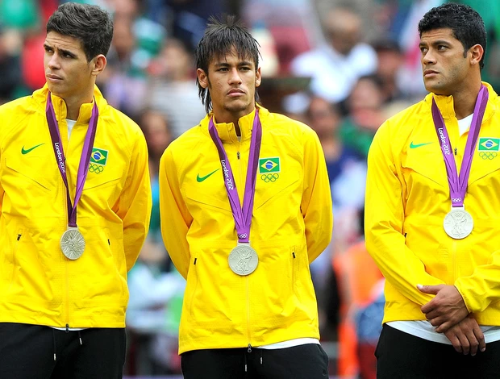

Os destaques do futebol olímpico incluem:
1. **Jogadores Famosos**: O torneio já viu estrelas como Messi, Neymar, e Ronaldinho, que brilharam em edições anteriores, mostrando seu talento em um palco internacional.
2. **Grandes Conquistas**: Países como Brasil, Argentina, e Alemanha têm uma rica história de sucesso, com o Brasil sendo um dos mais vitoriosos no torneio masculino.
3. **Futebol Feminino**: A inclusão do futebol feminino em 1996 trouxe um novo foco, destacando jogadoras como Mia Hamm e Marta, contribuindo para a popularização do esporte entre mulheres.
4. **Momentos Memoráveis**: Jogos emocionantes, como a final de 2016 no Rio, onde o Brasil conquistou a medalha de ouro em casa, são lembrados como marcos históricos.
5. **Desenvolvimento de Talentos**: O torneio serve como uma vitrine para jovens talentos, proporcionando uma plataforma para futuros astros do futebol.
Esses aspectos fazem do futebol olímpico um evento importante no calendário esportivo mundial, unindo nações e celebrando o espírito do esporte..